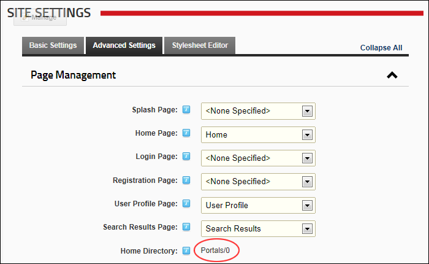

Viewing the Home Directory
How to view the Home Directory used for the storage of files in this site as configured when the site was created. The Home Directory cannot be modified.
- Navigate to Admin >
 Site Settings.
Site Settings.
- Select the Advanced Settings tab.
- Expand the Page Management section.
- At Home Directory here you can view the home directory. E.g. ../../../../../Resources

Viewing the Home Directory